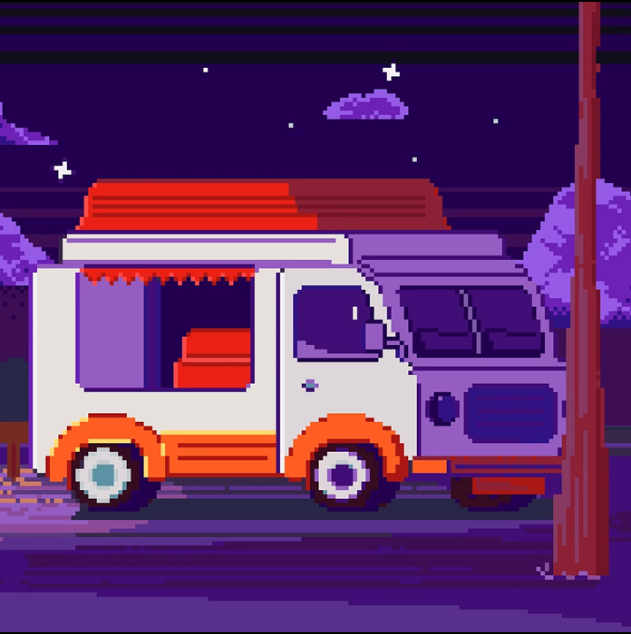

Фритрек и нулевой спринт: Подготовка к работе

Это было самое начало пути. На этом этапе важно было проникнуться основами и настроиться на учёбу. И, возможно, подумать, как новые знания могут повлиять на ваше будущее.
Это было волнительно и одновременно с этим долгожданно. Волнение исходило из сомнений о правильности своего выбора. Но время показало, что желание учиться именно в Практикуме и именно на выбранную специальность было верным решением! Команда сразу обволокла своими заботливыми руками и дала понять, что поменять профессию можно, но при условии твоего полного включения в процесс!
1 спринт: Я — чистый лист
На первых этапах мы работали со страхами и сомнениями, которые часто испытывают новички. Один из них — страх перед чистым листом. Это, конечно же, намного сложнее, чем боязнь куска бумаги. Часто за этим ощущением скрываются более глубокие вопросы: с чего начать? а вдруг будет слишком сложно? что, если я не справлюсь?
Мысли о первой проектной работе и правда наводили страх, который подстегивал прокрастинацию, чтобы отложить страшное подальше! Но всё оказалось намного проще, чем думалось благодаря выстроенной учебной системе! Перед началом работы был урок с готовым кейсом, где можно было увидеть как вообще это делается и с чего лучше начать! Но ещё больше помогли прописанные этапы выполнения работ по шажочкам! Со всеми возникающими вопросами помогала теория и групповой чат с ответами наставника!
1 спринт: А если не получится?
Первый проект — позади! Но это всё ещё самое начало пути. Радость могла быстро померкнуть и смениться ожиданием провала. Или вы, наоборот, могли вдохновиться успехами и поверить в себя.
Первая проектная работа преподнесла огромный заряд мотивации! Ведь это получилось сделать самой! Целый сайт! Вау! Да, он не такой уж сложный, совсем не адаптивный и скорее посредственный для бывалых акул программирования! Но ведь буквально месяц назад я вообще не могла ничего сделать, а тут такое! Поэтому это только подстегнуло двигаться дальше!
2 спринт: Погоня за идеалом
На этом этапе вы уже достаточно разбирались в основах вёрстки, чтобы понять, как много ещё впереди. Вы могли попытаться погнаться за идеалом и понять, что он недостижим. А, может, вы вовсе и не подвержены перфекционизму и вместо того, чтобы сделать идеально, старались просто сделать.
Хотелось запомнить всё и сразу, но оказалось что в верстке тааак много всего… что запомнить это как будто бы невозможно. Поэтому пришла на этом этапе к тому, что запоминать всё не получится, но знания о возможности выполнения тех или иных задач важны, ведь с этими знаниями всегда можно обратиться к теории для вычленения нужных свойств!
2 спринт: О тех, кто рядом
Всё это время вы были не одиноки (хотя, возможно, иногда и чувствовали, что одни против целого мира). Вас окружали одногруппники, команда сопровождения и просто близкие люди, которым можно пожаловаться, если очередной макет просто так не поддавался. Осваивать что-то новое легче, когда рядом есть единомышленники, не правда ли?
Люди рядом и правда помогают справляться с возникающими трудностями буквально в каждом спринте! Выслушают, дадут совет и направят в верном русле, после чего понимаешь что все выполнимо и преодолимо!
3 спринт: Обходные стратегии
На этом курсе вы постоянно решали разные задачи. В какой-то момент вам могло показаться, что решения просто иссякли. Значит, пришло время посмотреть на задачу под другим углом.
Да, возникало много трудностей и даже ступор, когда сидишь над одной задачей несколько часов подряд и совсем ничего не меняется. В эти моменты спасала возможность проветрить голову и вернуться к решению проблемы со свежими идеями и мыслями!
3 спринт: Когда опускаются руки
Во время учёбы часто возникает чувство, когда не знаешь, за что хвататься. Вроде и проектную пора сдавать, и задачи хочется порешать, и в теории получше разобраться, и жизнь не забыть пожить. В такие моменты очень нужна концентрация. Вспомните, откуда вы её черпали.
Концентрация черпалась из планирования и выстраивания приоритетов. Постановка целей и более точенное их дробление на шажки тоже помогало держаться в фокусе!
«Сейчас я здесь»
Сейчас вы уже очень много знаете о вёрстке. Но это только начало. Во-первых, впереди ещё много материала про «красотищу». Во-вторых, с окончанием курса учёба не заканчивается. Вёрстка — это целый мир. И этот мир постоянно меняется. Познать его полностью не получится, но это тот случай, когда важен сам процесс познания. Ведь часто путь — и есть результат.
Да, чем больше изучаешь материалов и возможностей, тем больше понимаешь, что процесс обучения будет длиться всю жизнь. И это не может не радовать, ведь изучение нового это про гибкость мышления, что важно не только для профессиональной среды, но и для жизни!